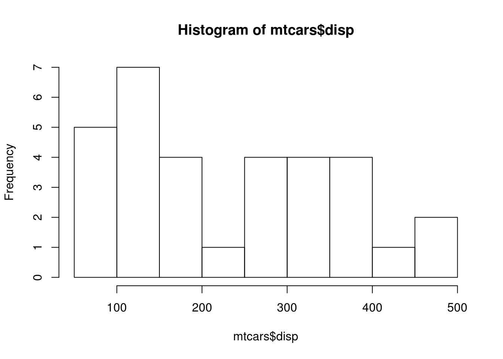
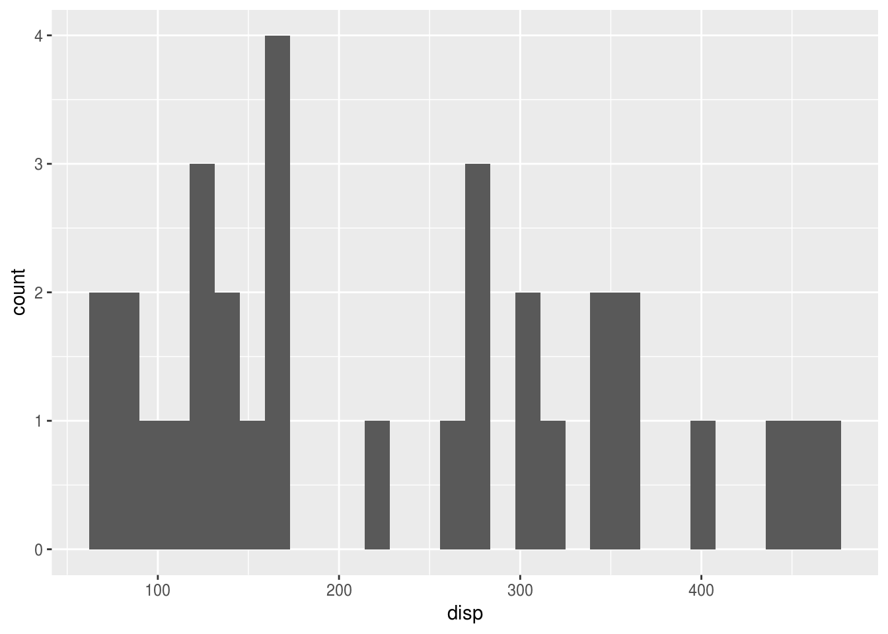
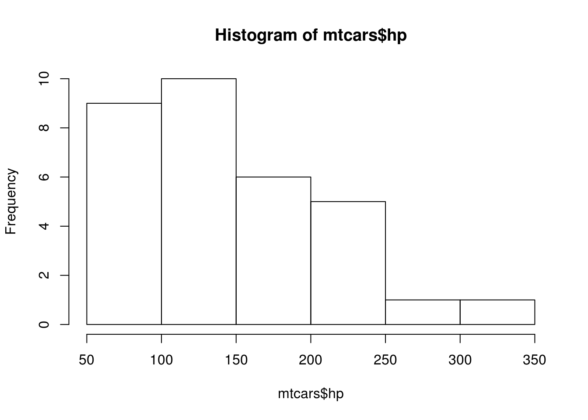
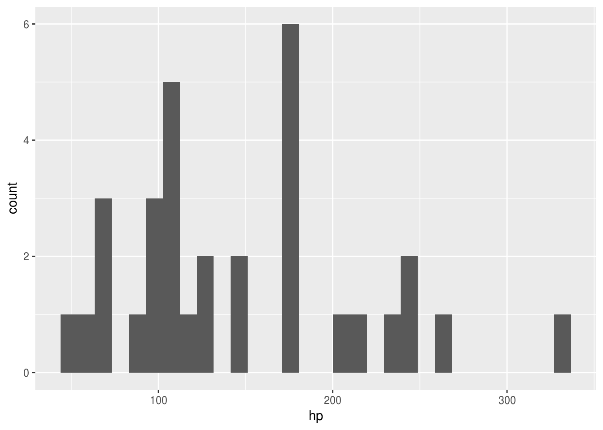
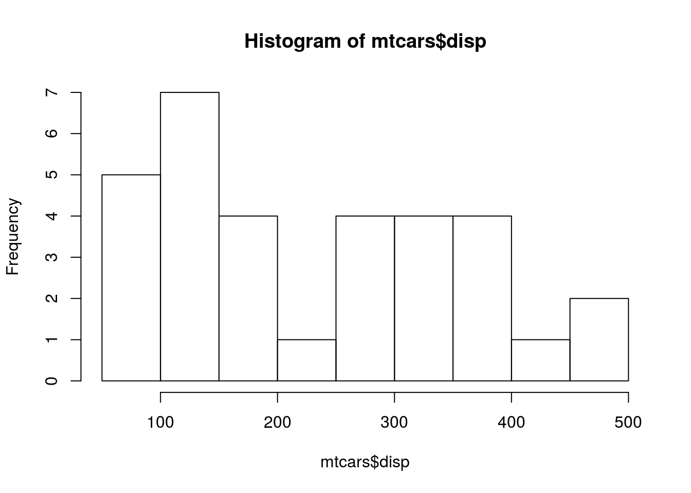
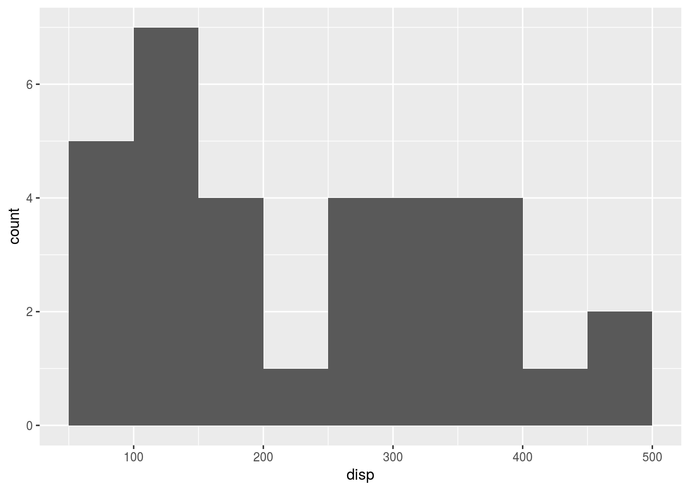
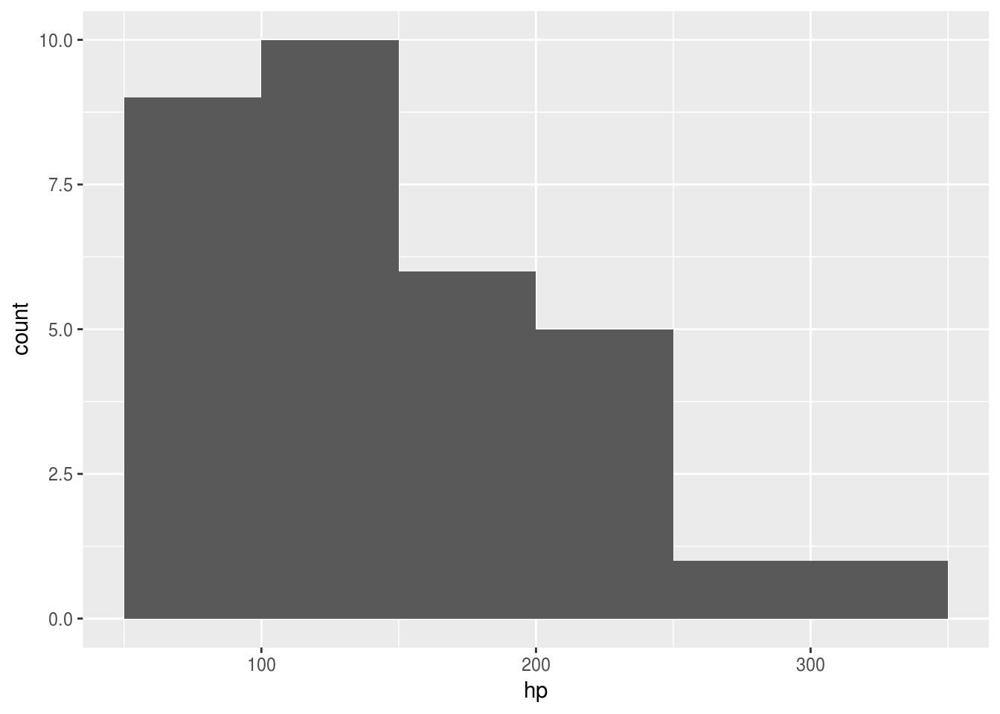

Rでヒストグラムを描くには、大きく、以下の二つの方法（関数）があります。
Rでグラフを描く場合にはggplot2パッケージを利用した方が統一感のあるコード記述で統一感のある体裁のグラフが描けるので、
可能であればggplot2を利用したい
デフォルトのgraphicsパッケージは極力利用したくないのですが、
はggplot2パッケージに比べつと扱いが比較的簡単で、描いたデータに対する各種計算値が簡単に得られることもあり
ggplot2::geom_histgram()のデフォルト設定でヒストグラムを描くとgraphics::hist()を使た場合と形状の異なるヒストグラムが描かれます。例えば組み込みデータセットであるmtcarsのdispとhpの二つのデータでヒストグラムを描くと次のような違いとなります。
graphics::hist(mtcars$disp)
mtcars %>%
ggplot2::ggplot(aes(x = disp)) +
geom_histogram()## `stat_bin()` using `bins = 30`. Pick better value with `binwidth`.
graphics::hist(mtcars$hp)
mtcars %>%
ggplot2::ggplot(aes(x = hp)) +
geom_histogram()## `stat_bin()` using `bins = 30`. Pick better value with `binwidth`.
このようにデフォルト設定ではヒストグラムを描くと似ても似つかぬ分布になることがあります。これは、ggplot2::geom_histgram()はデータ範囲を30分割したものを階級幅とし、graphics::hist()では、Sturgesの公式を用いて階級幅を決めているためです。
そこで、ggplot2::geom_histgram()でgraphics::hist()と同様のヒストグラムを描くためのオプション指定方法を探ります。
dataset::mtcarsのデータを用いてgraphics::hist()で描けるヒストグラムを正とし、同様のグラフをggplot2::geom_histgram()で描くためのオプションを探ります。
DT::datatable(mtcars, class = class, style = style, caption = "mtcars dataset")ヒストグラムを描くためには最初にデータから度数分布表を作成する必要があります。この際にポイントとなるのが階級幅や階級数をどのように設定するかです。階級数の決め方には色々な方法がありますが代表的な公式としては以下のものがあげられます。
| 階級数の計算方法 | Rでの関数 | Package |
|---|---|---|
| Sturges’s formula | nclass.Sturges() | grDevices |
| Scott’s choice | nclass.scott() | grDevices |
| Freedman-Diacnis choice | nclass.FD() | grDevices |
これらの公式は階級数を求めるもので、描画の際に必要となる階級幅を決めるためにgraphics::hist()ではbase::pretty()という関数を利用しています。base::pretty()はデータにより適切な階級幅を計算しますので、上記の公式で求めた階級数と計算結果が異なる場合があります。
実際にmtcarsのdispとhpはStargesの公式で階級数を計算すると同じ6になりますが、階級幅を計算するとdispの階級数が9、hpの階級数が6となります。
nclass.Sturges(mtcars$disp)## [1] 6pretty(range(mtcars$disp), n = nclass.Sturges(mtcars$disp), min.n = 1)## [1] 50 100 150 200 250 300 350 400 450 500nclass.Sturges(mtcars$hp)## [1] 6pretty(range(mtcars$hp), n = nclass.Sturges(mtcars$hp), min.n = 1)## [1] 50 100 150 200 250 300 350度数分布表は求めた階級幅を元に階級毎にいくつのデータがあるかを集計したものです。一般的には次のような形を取ります。
mtcars %>%
dplyr::mutate(bin.w = cut(disp,
pretty(range(disp), n = nclass.Sturges(disp), min.n = 1),
right = TRUE, include.lowest = FALSE)) %>%
dplyr::select(bin.w, disp) %>%
dplyr::group_by(bin.w) %>%
dplyr::summarise(freq = n()) %>%
dplyr::rename('階級' = bin.w, '度数' = freq) %>%
DT::datatable(class = class, style = style, caption = "度数分布表")各階級毎の度数の集計方法ですが、階級の境界値をどちら側で集計するかでヒストグラムの形が変わってきます。
各階級の下限値側を含まず、上限値側を含む集計方法を右閉じといい(lwr, upr]と表現します。数式で表すと以下のようになります。
\[各階級の下限値（lwr） \lt データ \le 各階級の上限値（upr）\]
mtcars %>%
dplyr::mutate(bin.w = cut(disp,
pretty(range(disp), n = nclass.Sturges(disp), min.n = 1),
right = TRUE, include.lowest = FALSE)) %>%
dplyr::select(bin.w, disp) %>%
dplyr::group_by(bin.w) %>%
dplyr::summarise(freq = n()) %>%
dplyr::rename('階級' = bin.w, '度数' = freq) %>%
t() %>% as.data.frame() %>% DT::datatable(class = class, style = style,
caption = "右閉じの場合")逆に各階級の下限値側を含み上限値側を含まない集計方法を左閉じといい[lwr, upr)と表現します。数式で表すと以下のようになります。
\[各階級の下限値（lwr） \le データ \lt 各階級の上限値（upr）\]
mtcars %>%
dplyr::mutate(bin.w = cut(disp,
pretty(range(disp), n = nclass.Sturges(disp), min.n = 1),
right = FALSE, include.lowest = FALSE)) %>%
dplyr::select(bin.w, disp) %>%
dplyr::group_by(bin.w) %>%
dplyr::summarise(freq = n()) %>%
dplyr::rename('階級' = bin.w, '度数' = freq) %>%
t() %>% as.data.frame() %>% DT::datatable(class = class, style = style,
caption = "左閉じの場合")右閉じと比べてV6～V8の度数が異なっていることが分かります。
右閉じで集計する際に最も小さいデータの値が階級の再下限値と同値の場合、この最も小さい値を集計対象とするか否かでヒストグラムの形が変わってきます。
mtcars %>%
dplyr::mutate(bin.w = cut(disp,
pretty(range(disp), n = nclass.Sturges(disp), min.n = 1),
right = TRUE, include.lowest = TRUE)) %>%
dplyr::select(bin.w, disp) %>%
dplyr::group_by(bin.w) %>%
dplyr::summarise(freq = n()) %>%
dplyr::rename('階級' = bin.w, '度数' = freq) %>%
t() %>% as.data.frame() %>% DT::datatable(class = class, style = style,
caption = "右閉じ＆再下限を含む場合")ggplot2::geom_histgram()でgraphics::hist()と同等のヒストグラムを描くには、前述の階級指定がポイントになります。
ggplot2::geom_histgram()で利用できるオプションは
| option | |
|---|---|
| breaks | 境界値による |
| bins | 階級数を指定する |
| binwidth | 階級幅を指定する |
| closed | 右閉じまはた左閉じの指定 |
| boundary | |
| center |
graphics::hist(mtcars$disp)
mtcars %>%
ggplot2::ggplot(aes(x = disp)) +
geom_histogram(breaks = pretty(range(mtcars$disp),
n = nclass.Sturges(mtcars$disp), min.n = 1),
closed = "right")
graphics::hist(mtcars$hp)mtcars %>%
ggplot2::ggplot(aes(x = hp)) +
geom_histogram(breaks = pretty(range(mtcars$hp),
n = nclass.Sturges(mtcars$hp), min.n = 1),
closed = "right")